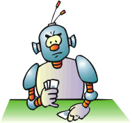

For example, you have a model according to which the sun rises each
morning, but you cannot be sure that it will rise tomorrow, because it
is possible that in the world where you live the sun rises a finite number
of times and today was the last sunrise.
That is to say, the task of AI
is to find a model of the world and to act according to this model. It
is not necessary for the model to be full and to tell everything about
the world (we will want to tell more, of course). The model should be reliable,
that is to say, it should not contradict the life experience of AI. As
there are infinite many models that do not contradict our life experience
we will aim to find the simplest one. For example, we will suppose that
the sun will rise tomorrow again, because the model in which the sun rises
every day is simpler than the model in which the sun rises ten thousand
times and then stops.
Another question is whether we
consider the function World as determined.
Are the numbers from the lottery previously determined in the real world
and is it the same about the weather. If they are determined and if we
can find the dependency determining them, we could earn well or at least
we will know when to take an umbrella and when - not.

According to some people there
is fate that determines everything, that is why they accept the fate and
get wet in the rain. Other people think that everything can be calculated,
that is why they listen to the weather forecast. There is a third group
of people who think that these are fortuitous events and for this reason
they always have an umbrella.
|
According to us, it does not matter whether this is determined or not.
The only thing that interests us is whether we can foresee it. If something
is determined by a very complicated dependency that we cannot understand
it will be the same for us if this is fortuitous or not. The conclusion
is that we can safely think the function World
determined, but to assume that in the world there are phenomena which dependencies
are difficultly understood or cannot be understood at all. In the model
that we are going to build of the world these phenomena will be modelled
as fortuitous.
There is one thing left. It is to tell what
will the model of the world look like, how AI will find this model and
how by possessing it will plan its actions so, to get a maximum result.
Of course, the results will be good if the model is correct or, at least,
it is adequate to the world to some extent. For now we will say that the
model will consist of finite automata. Among the automata we will also
use undetermined ones, in order to describe the fortuitous events.
The question what a finite automata
is and how it could be the model of the world goes beyond the limits of
this paper but the readers can take interest themselves and to find literature
on this topic. A better studied question is that how the computer can plan
its actions when it already has a model of the world. The most popular
algorithm is the so-called Min-Max algorithm
that is at the base of the play- chess programs. If the reader is interested
how the computer thinks through Min-Max we
would advise him to take a look at the program Strawberry
Prolog that is on the CD enclosed to this magazine. There in the examples
are a few games (Tick-Tack-Toe, Checkers and others) that use the algorithm
Min-Max.
|